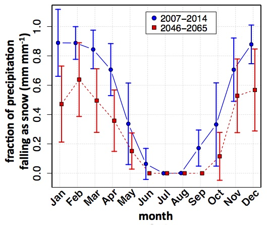
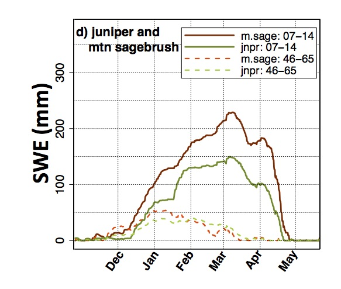

Juniper and Climate Change
Changes in Snowfall
Western Juniper primarily occupy semi-arid areas in the western U.S. These areas are projected to get both warmer and potentially drier in the summer. This means that less precipitation will fall as snow, and more as rain. At our juniper site at RCEW, in 20007-2014, 63.3% of precipitation fell as snow, but under future climate projections for 2046-2065, only 37.3% of preciptiation fell as snow. This means that soil will likely get drier earlier in the spring and summer. 
figure caption: Fraction of monthly precipitation falling as snow to total monthly precipitation (PG) over WY 2007-2014 (blue circles) and under mid-21st century warming (red squares). Points are averages for the eight-year period, error bars denote one standard deviation.
Snowpack
As precipitation shifts from predominantly snow to predominantly rain, with either increasing juniper encroachment or juniper removal, these co-occuring processes (shifts from snow to rain and shifts to/from sagebrush to/from juniper) can excacerbate or reduce hydrologic impacts. For example, we simulated current (2007-2014) and future (2046-2065) snowpack in sagebrush and juniper. We see that while a greater amount of snow is deposited in sagebrush under the current climate, due to less precipitation falling as snow, there is almost no difference in snowpack regime between sagebrush and juniper in the future climate. 
figure caption: Average SWE for WY 2007-2014 (solid) and an 8 year period based on the projected climate in 2045-2064 (dotted line). Plots are for a) juniper, b) mountain big sagebrush, c) low sagebrush where bold line represents SWE through time averaged over the 4 years middle peak SWE years, and lines above (below) represent the two years with the highest (lowest) peak SWE accumulation. Panel d) compares average juniper (bold) and mountain big sagebrush (not bold) SWE for current climate (solid) and 8 year period based on 2045-2064 future climate (dotted).
Snow Disappearnce, Surface Water Input, and Evapotranspiration Loss
To table below summarize how future warmer temperatures will impact snow, surface water input (SWI), and evapotranspiration (ES) loss. SWI is the amount of water that enters the soil. ES loss is the amount of water lossed to the atmosphere via evaporation from soil and plant surfaces or transpiration by actively transpiring plants. We can see that under the current climate (2007 - 2014), snow disapepars on average April 14th across all vegetation types. Conversley under the future climate (2046 - 2065) snow disappearance occured on average on February 22nd. This results in SWI occuring 41 to 56 days earlier, depending on the vegetation type. Finally, ES loss increases slightly between the current and future climate, on average 20 mm. However vegetation type exerts a greater contorl on ES loss than climate.
| Juniper | Mtn. sage | Low sage | |
|---|---|---|---|
| Snow disap. day - current | 103 +/- 21 | 104 +/- 20 | 105 +/- 19 |
| Snow disap. day - future | 47 +/-18 | 52 +/- 21 | 59 +/- 18 |
| SWI - current (mm) | 390 +/- 109 | 511 +/- 121 | 545 +/- 118 |
| SWI - future (mm) | 377 +/- 103 | 492 +/- 112 | 535 +/- 116 |
| SWI 50% - current (days) | 178 +/- 18 | 183 +/- 18 | 185 +/- 18 |
| SWI 50% - future (days) | 132 +/- 17 | 142 +/- 14 | 137 +/- 16 |
| ES loss - current (mm) | 213 +/- 16 | 114 +/- 16 | 123 +/- 22 |
| ES loss - future (mm) | 229 +/- 19 | 138 +/- 10 | 142 +/- 23 |
table caption: SWI amount and timing for current and future climates for the two eight-year periods. SWI 50% is WY day when 50% of Oct-June SWI occurred. Numbers after “+/-” denote standard deviation. Snow disappearance (disap.) day is calculated based on the first day without snow after February 1st. Evaporation-Sublimation (ES) loss is the average annual loss.
Juniper and Climate Change
Many climate change studies predict that the summers in the western U.S. will be warmer and drier than historical summers. Indeed some exceptionally hot and dry summers have caused pinyon pine die-off in the southwestern U.S. Studies have shown that these mass die-offs ocured almost exclusively to pinyon pine, but not to juniper. There's varios causes, but on reaseon could be rooting depth. Studies have shown that juniper species are deeper rooted than pinyon species in the southwestern U.S. For example, for co-existing J. osteosperma (mon juniper) and P. edulis (pinyon pine), J. osteosperma utilized deeper pools of soil moisture and P. edulis used shallower pools of soil moisture (West et al., 2007). In our studies in Idaho revealed that western juniper can access water up to 12 m in depth (see this page for a more detailed description). It is therefore likely that western junipers will be resilient to future summers that are drier and warmer.
Source: Niemeyer et al., 2016, Hydrological Processes